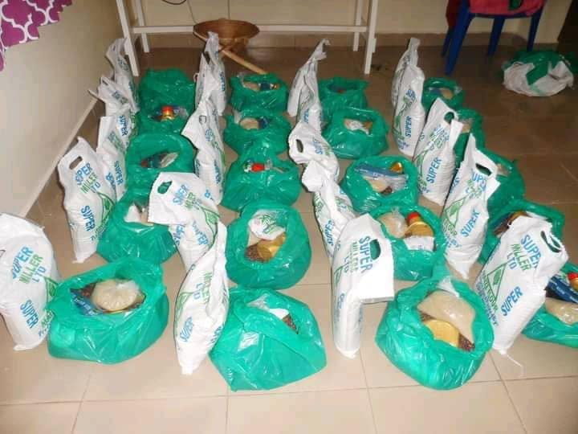

What We Do
At All God's Children Foundation (AGCF), we work with communities
to help children access education, learn essential life skills,
and grow in safer and more supportive environments.
Our programmes focus on education, school supplies, water safety,
access to safe water, family and community support, and mentorship.
Explore each programme below to learn more about our work.

Education Support
We support children facing barriers to education by helping
with school fees, uniforms, scholastic materials, and essential
school requirements. Our aim is to help children continue learning
and work towards a brighter future.
Explore Education Support

School Supplies Drive
We mobilise school supplies and learning materials for children
who need them. These essentials help learners prepare for school
and participate more confidently in their education.
Explore School Supplies

Water Safety Campaign
We promote water safety awareness and drowning prevention among
children and communities. Through educational sessions and
practical demonstrations, we aim to help children recognise
water hazards and understand safer behaviour around water.
Explore Water Safety

Safe Water Access
We support community efforts to improve access to safer water.
Our borehole project documents the process from manual digging
and drilling to pump installation, top construction, and
community handover.
Explore Safe Water Access

Family & Community Support
We engage with families and communities to understand children's
needs and provide practical support where possible. Our work
encourages community participation and stronger support systems
for children.
Explore Community Support

Mentorship & Life Skills
We encourage children through mentorship, educational guidance,
and life-skills activities. These opportunities help children
build confidence, develop positive habits, and think about
their future goals.
Explore Mentorship
Community Borehole Construction and Safe Water Access
Access to safe water is important for children's health, family
wellbeing, and community development. AGCF's borehole project page
shares photographs documenting the work at different stages,
including manual digging, drilling, pump installation, borehole
top construction, and community handover.
Visit the project page to view the photographs and learn more
about the community water-access initiative.
View the Borehole Project
Coffee for Education
Explore our Coffee for Education initiative and learn how
community support can contribute to educational opportunities
for children.
Discover Coffee for Education